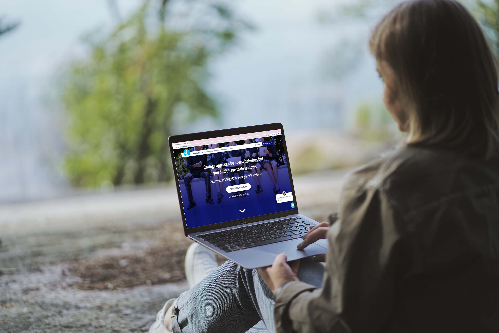
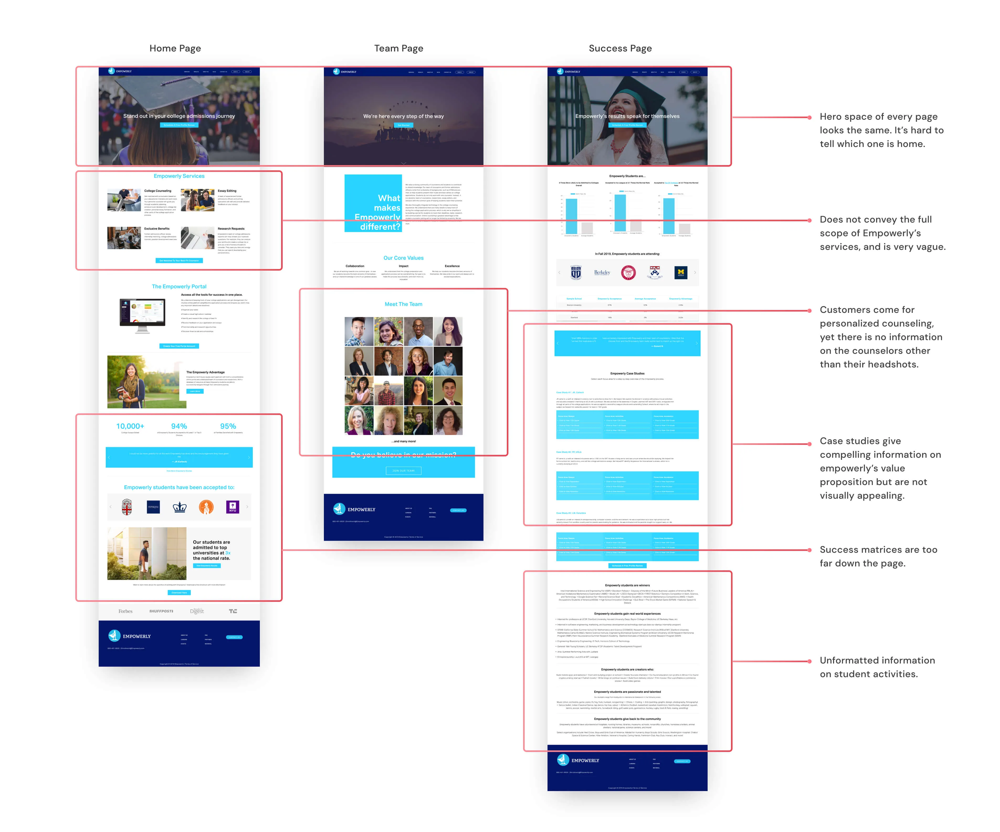
What did we do?
Rebuilt the entire website in-house so that the team had full control over the website.
Created a design system of components that the team can react quickly to necessary changes, and continue to plug-and-play with over the long term.
Reworked the information architecture, content, and visual branding of the website to fit our target audience.
As the solo designer, I was responsible for all of the following:
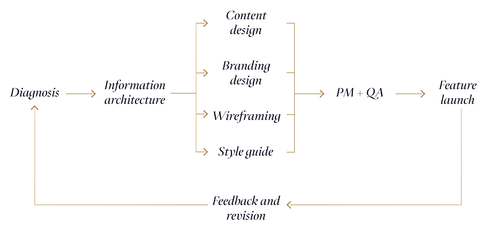
For a marketing website, SEO is critical and is hugely determined by the information architecture.
In the following, you can see how the site map evolved over the phases. The purpose was to make content more easily searchable on search engines for prospective customers.
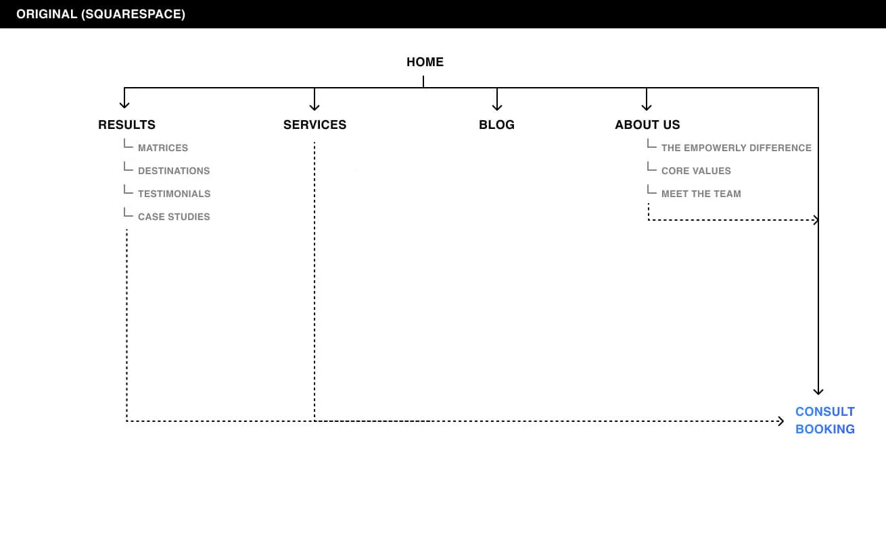
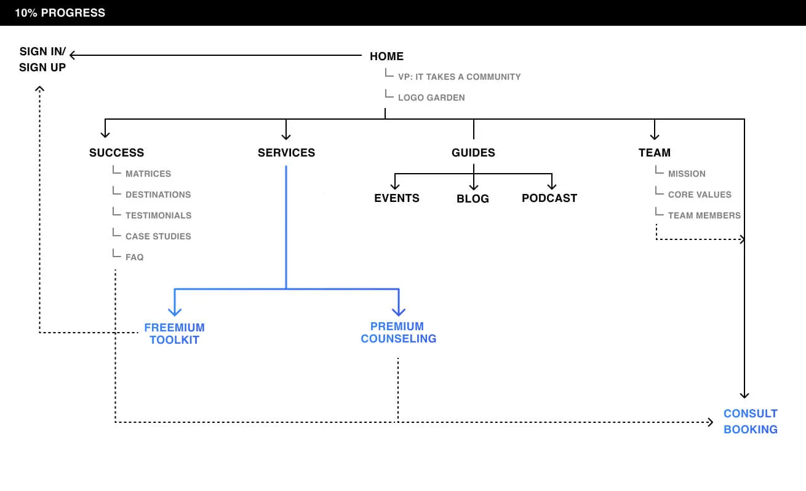
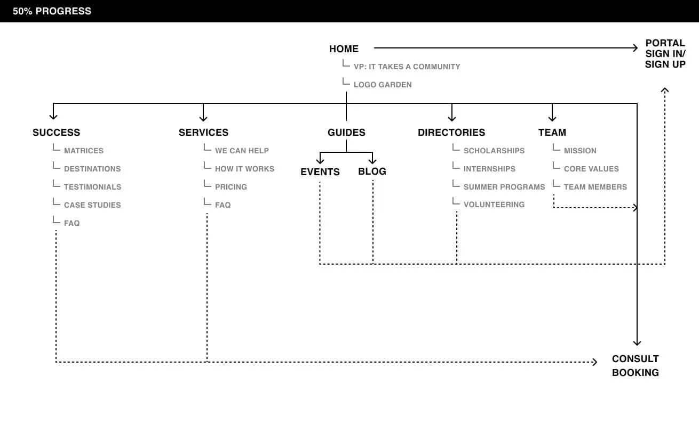
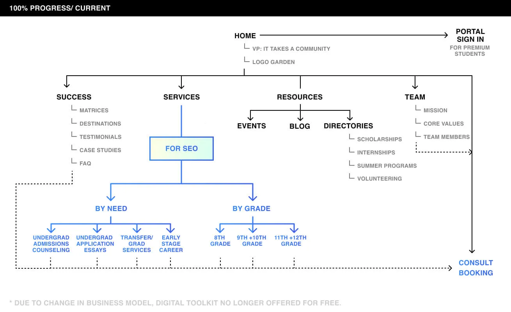
Since we were moving off Squarespace, the sky was the limit. It was especially liberating for our team to be able to think about how we wanted the ideal website to look like — with just pencil and paper.
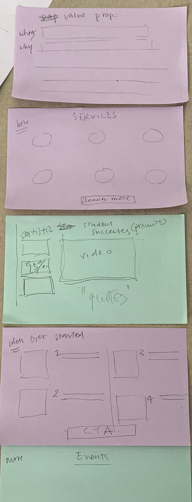
At the time, our COO believed we should do a brand refresh so that the visual language better speaks to our students. From experience, she observed that the best results came from students who felt most involved and engaged. I suggested a bold but playful look and feel for the graphics and illustration. The monotone palette was ultimately chosen to create a more calming and subdued feeling as a counterbalance. This combination of bold graphics with a calm monotone overlay appealed to both parents and students.
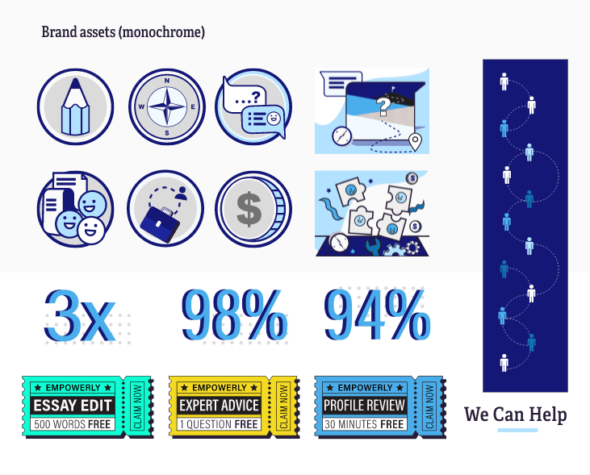
As the project progressed through the different iterations, we gathered constant feedback from internal stakeholders and explored some tricky questions: for example, how do we deal with pricing information? How and when do we highlight the freemium student portal sign up? Would that compete with premium counseling service consults? Even after the website had launched, we continued to experiment and made changes as business directions changed. The important thing from the product team’s point of view was to stay flexible.
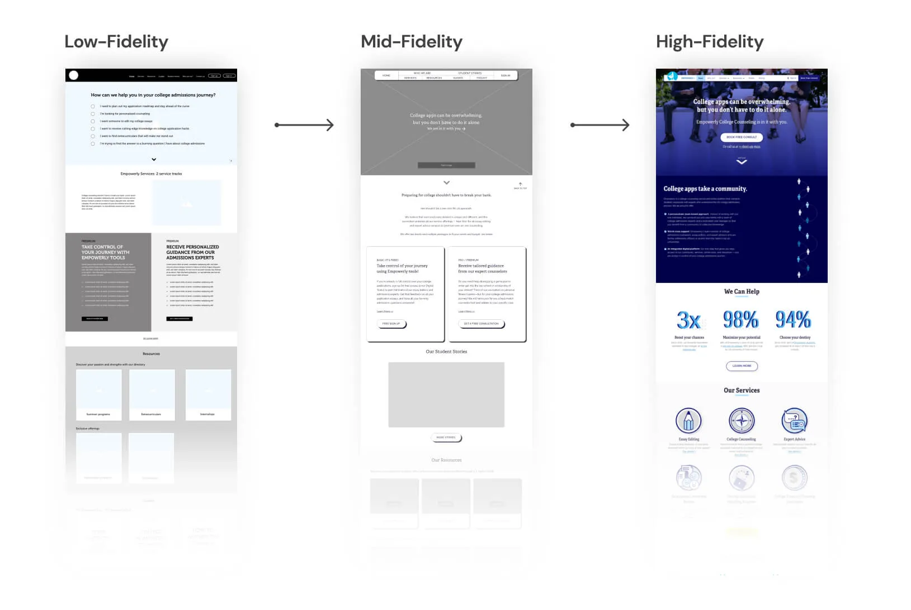
Since this website was built from scratch, I started with a design system and ensured that individual elements were developed according to specifications and were recyclable. This helped expedidite development velocity over time.
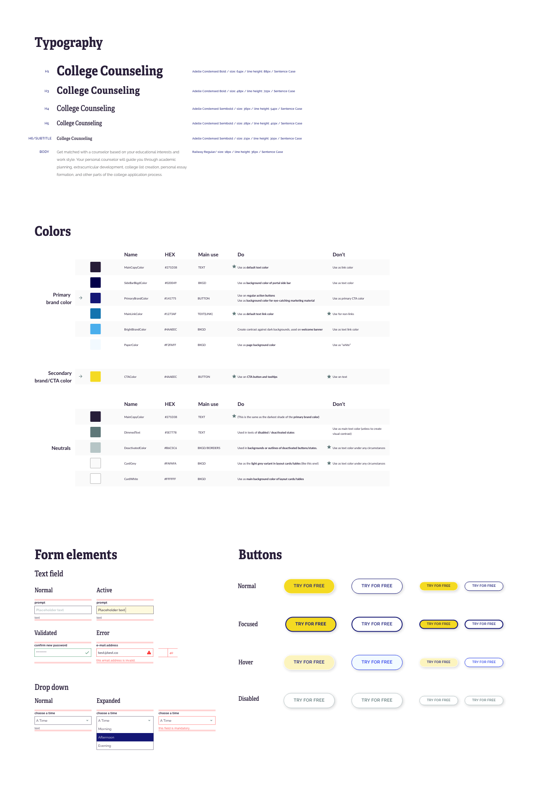
Building this website taught me a crucial habit when it comes to working with engineers—at least as a solo designer. That is, if I am to start working with a new engineer or engineers, I would always start with the smallest denominator — a single button, a single module, then slowly — a single page. This way, we make sure the foundation is strong, and from there, we slowly build up a rhythm.
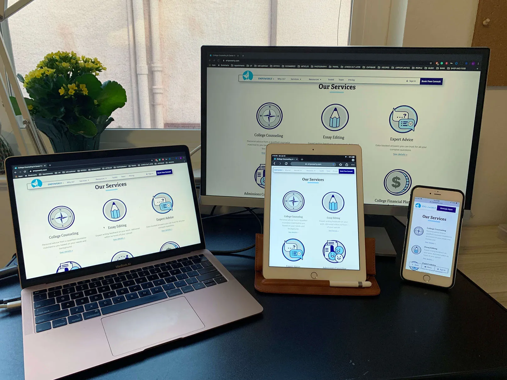
Throughout the development progress, I intruduced the use of Airtable to for logging bugs and tracking progress. It took more than 300 QA tickets to reach the final level of polish.
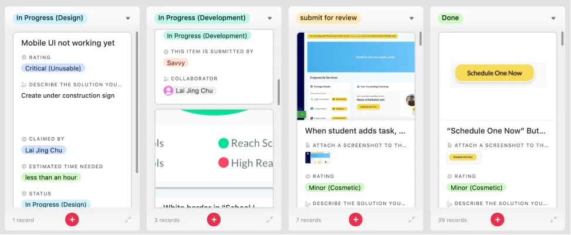
I instituted a kanban board for reviewing the development and documenting bugs to be fixed.
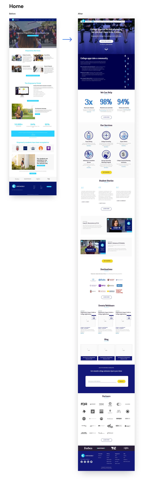
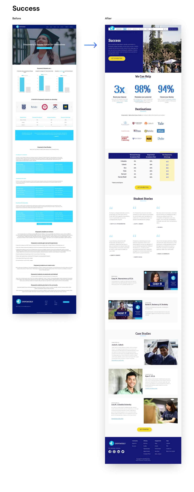
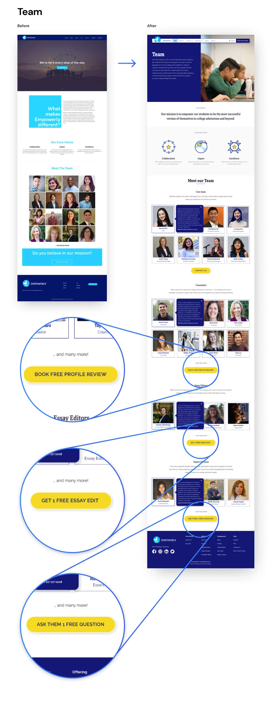
Reduced average bounce rate from 72% to under 40%.
Visitor-to-consult conversion is up at 3%, which is a healthy level.
Increased signups of the free digital portal by at least 200% every month compared to the previous year.
They often have insights on customers and users which we could harness. They also have needs and goals which we should also address. Being responsive is critical to building team trust.
This was the first time I had come in contact with SEO and was fascinated by how much it is driven by user-centric thinking. I have always been intrigued by how SEO could influence web design approach.
As a recent graduate of a UX bootcamp, I took a whole separate course on visual design to complement my skillset, which was a great learning opportunity and expanded my horizons.


Made in Figma + Webflow by Lai Jing Chu, 2025.
Take a peek at the website style guide.